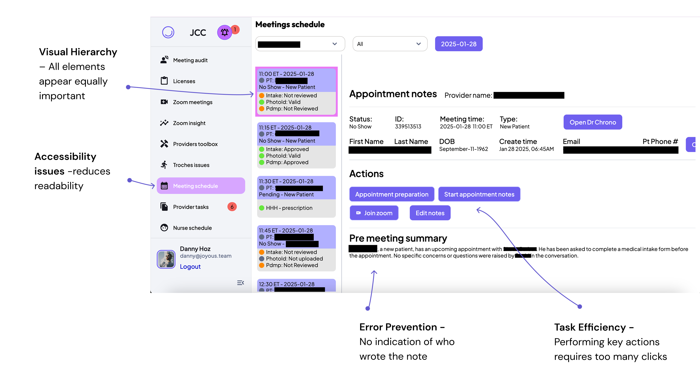
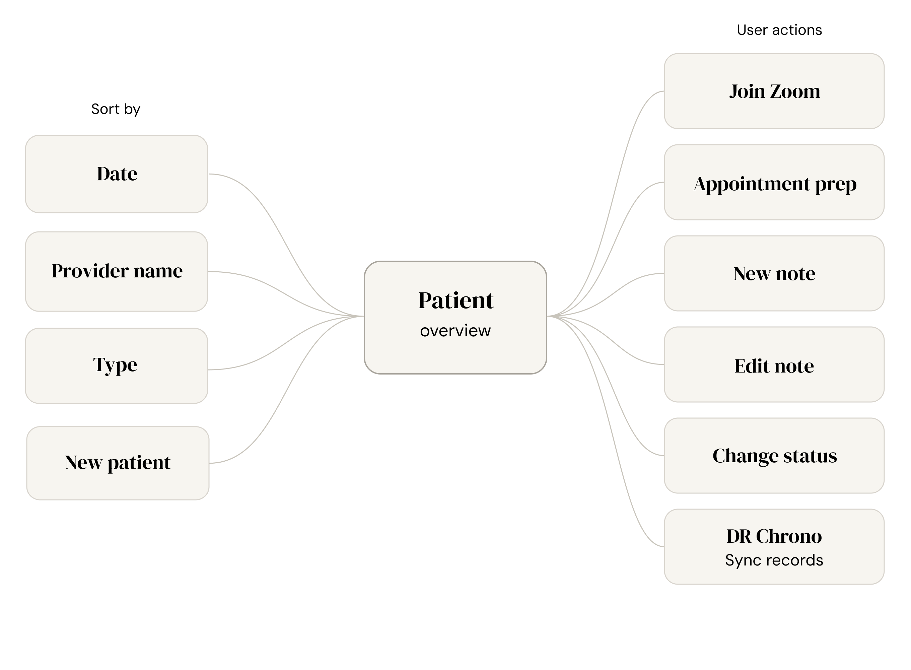
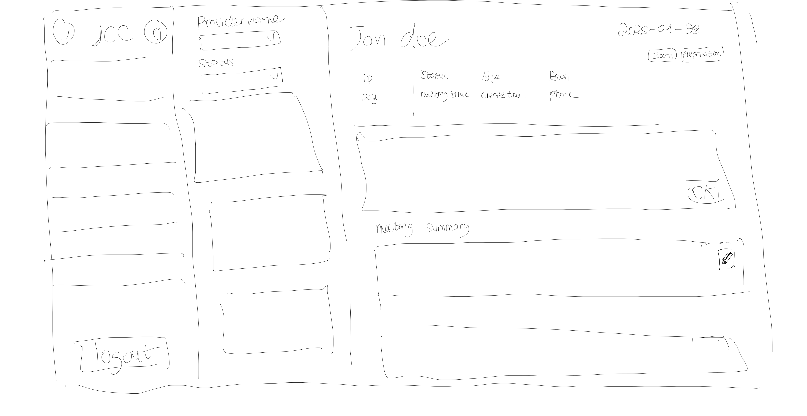
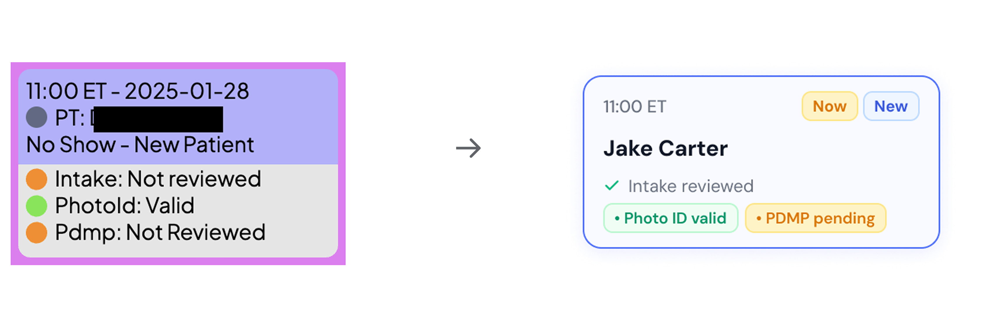
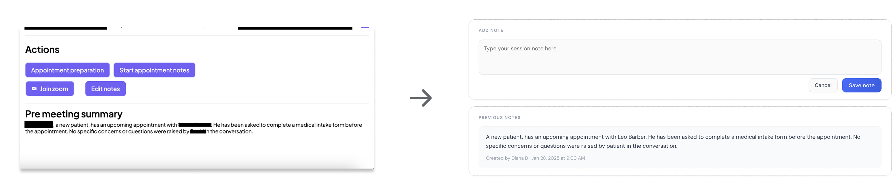
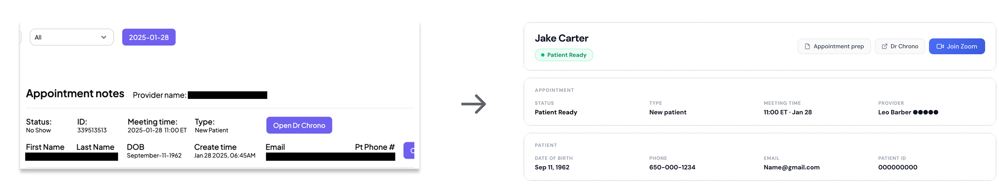
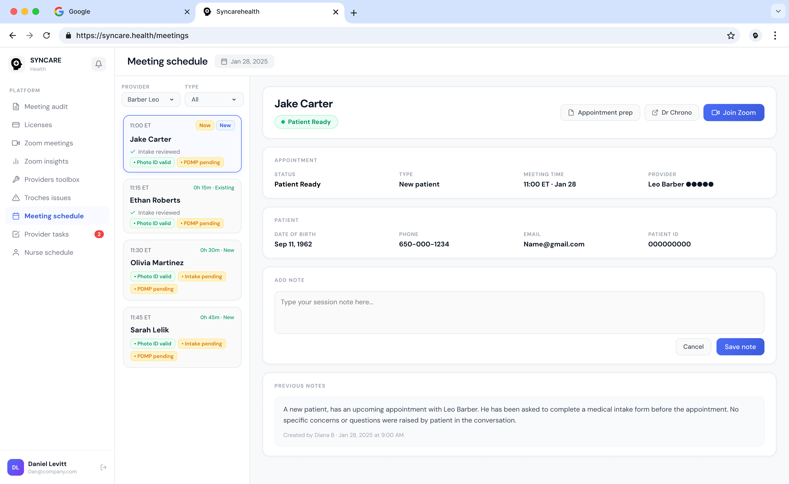

Syncare
A provider-patient management platform redesigned to cut through the noise - so healthcare providers can focus on what matters most: their patients.

Tools built to help are slowing providers down
Existing patient management interfaces are cluttered and inefficient, turning back-to-back appointments into a high-stakes race where administrative tasks steal the focus required for effective, empathetic care.
Understanding the existing design
Because I had limited access to users for this design challenge, I used a heuristic evaluation and design best practices to identify usability issues in the existing interface.

Replace guesswork with guaranteed efficiency
The goal was simple - make sure providers know what to do next.

Early sketches, better hierarchy
I explored different approaches to improve information hierarchy and surface the most critical patient details without overwhelming providers.

A redesigned interface that cuts visual noise and puts the most important patient details front and center - so providers can move fast and stay focused.
Three solutions, one system
Patient Overview Card
Reduced cognitive load by refining the hierarchy and removing color confusion.

Speed Documentation
Reduced friction by removing unnecessary buttons and consolidating everything into one screen. Providers can write and review notes while viewing patient history simultaneously - with clear indicators of who wrote each note and when.

Information Clarity at a Glance
Improved clarity by cleaning up spacing and layout - patient name at the top, related actions grouped together, and patient status immediately visible. No scanning required.

The complete picture

What I took away
Purposeful color use builds clarity - every color choice should earn its place by communicating meaning.
Heuristic evaluation is a powerful tool when direct user access is limited - it surfaces real usability issues fast.
Consolidating screens reduces cognitive load - fewer transitions means more mental bandwidth for the patient.
In high-pressure environments, hierarchy is everything - what's shown first shapes what gets done first.
This design challenge strengthened my ability to quickly identify usability problems and translate them into focused, actionable design decisions - even with limited research access.